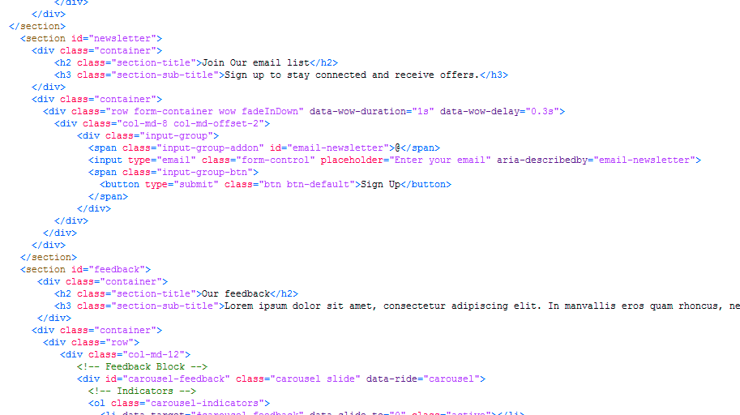

Created: 21/02/2014
By: AndyLab
Support: c.birrillo@gmail.com
Thank you for purchasing this theme. If you have any questions that are beyond the scope of this help file, please feel free to me. Thanks so much!
This theme uses the Bootstrap grid system, which will help streamline any customization you wish to make.
You can view this template in any web browser from your desktop computer. Because the files are written in HTML
I'm using one main CSS file (custom.css) in this theme which you are free to modify depending on the customization you require.
It is possible to personalize the theme through the “Less” files attached to the project:
To change the color of the main theme:
Other Files CSS:
TABLE OF CONTENT 1 GENERAL STYLING -------------------------------- 1.2 BASIC - TYPOGRAFY STYLE 1.3 SPINNER 1.4 DATEPICKER 1.5 SLIDER 1.6 BUTTON 1.7 SECTION 1.8 NAVBAR 1.9 BREADCRUMBS 1.10 PAGINATION 1.11 FOOTER 2 HOME PAGE -------------------------------- 2.1 HEADER 2.2 PACKAGE 2.3 GALLERY 2.4 BLOG 2.5 CONTACT 2.6 FEEDBACK 2.7 NEWSLETTER 2.8 BOOKING 3 PAGES -------------------------------- 3.1 HEADER PAGES 3.2 WIDGET FORM 3.3 WIDGET BOOKING 3.4 WIDGET GALLERY .... ....
If you would like to edit a specific section of the site, simply find the appropriate label in the CSS file, and then scroll down until you find the appropriate style that needs to be edited, Example:
/*-------------------------------------------------------------------------------*/
/* 3.4 WIDGET FORM STYLE */
/*-------------------------------------------------------------------------------*/
tag, #id {
code ...;
code ...;
code ...;
}
class {
code ...;
code ...;
code ...;
}
/*-------------------------------------------------------------------------------*/
/* 3.4 WIDGET GALLERY STYLE */
/*-------------------------------------------------------------------------------*/
tag, #id {
code ...;
code ...;
code ...;
}
class {
code ...;
code ...;
code ...;
}
There are 10 script files in this theme:
To add or change the images of slide, change the portion of text in the "script/custom.js" file, Example:
$(".slide#img1").backstretch("images/slider/1.jpg");
$(".slide#img2").backstretch("images/slider/2.jpg");
$(".slide#img3").backstretch("images/slider/3.jpg");
$(".slide#img4").backstretch("images/slider/4.jpg");
Once again, thank you so much for purchasing this theme. As I said at the beginning, I'd be glad to help you if you have any questions relating to this theme. Please contact me via my author contact form. I'll do my best to assist!